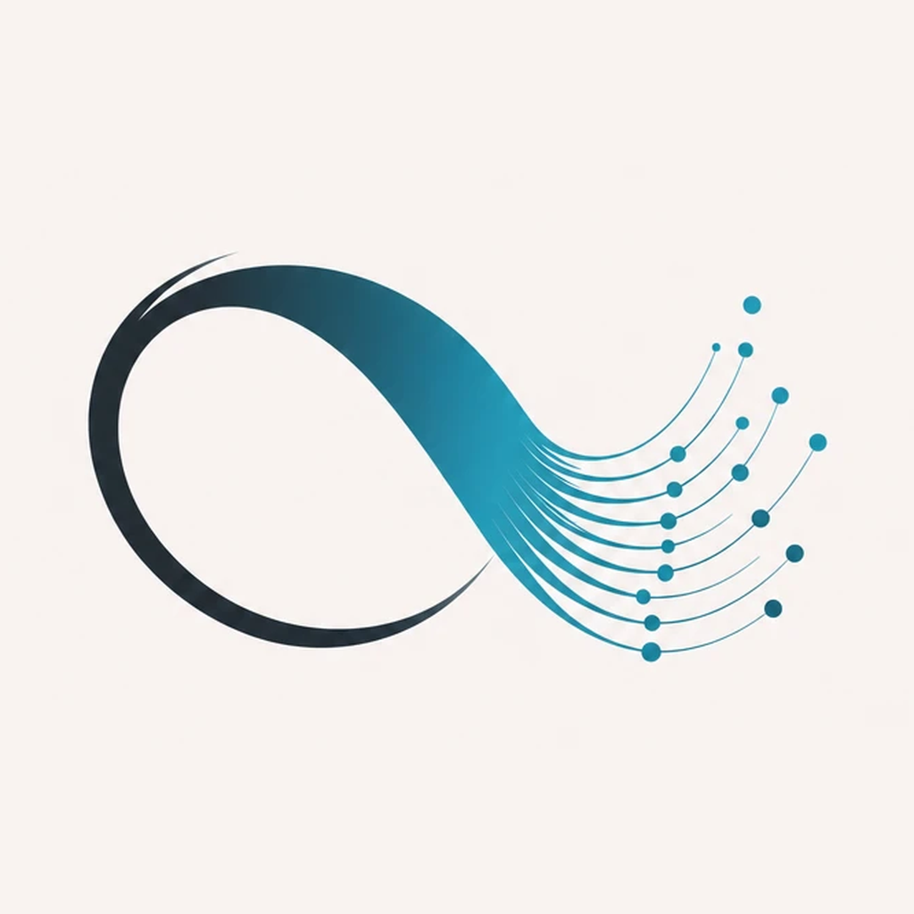
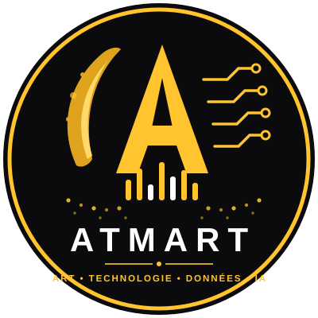

atmart-logo.pngmaster — fond crème
Système à 3 niveaux : badge (grands formats), monogramme (avatar/favicon), horizontal (en-têtes). Or unique, pas de halos. La devise Atmart est Art • Technologie • Données • IA (l'art est un pilier à part entière — LojiKid en est l'expression pour les enfants).
La boucle infinie qui se dissout en points de données : le continu et le mesurable, l'humain et la donnée. C'est le logo à utiliser partout — site, application installée, favicon, réseaux sociaux.

atmart-logo.png| Master (crème) | assets/brand/atmart-logo.png | 1024×1024 — réseaux sociaux, icône de l'app |
| Transparent | atmart-logo-transparent.png | fonds clairs, documents, impression |
| Fond sombre | atmart-logo-dark-bg.png · logo-dark-96/64/32.png | barre du site — moitié sombre éclaircie (contraste 3,85:1) |
| App installée (PWA) | icon-192.png · icon-512.png | écran d'accueil Android / iPhone |
| Favicon | favicon.ico · logo-32.png | onglet du navigateur |
| iPhone | apple-touch-icon.png | 180×180 |
| Fond du logo | #F9F3F0 (crème) | = couleur de l'écran de lancement de l'app |
Règle : choisir la bonne variante selon le fond. Le master crème pour l'app et les réseaux ; le transparent pour les fonds clairs et l'impression ; la variante « fond sombre » (moitié gauche éclaircie) pour la barre du site — l'originale y serait illisible (contraste 1,72:1).

atmart-badge.svg| Or Atmart | #FFC42E | logo, accents, titres marque |
| Noir | #0B0B0D | fonds du badge |
| Blanc | #FFFFFF | mot-symbole ATMART (une seule couleur) |